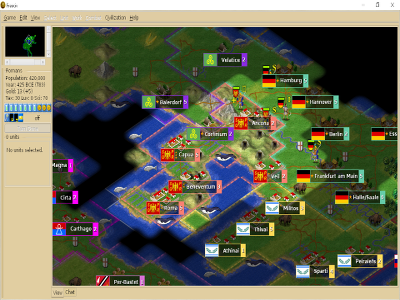
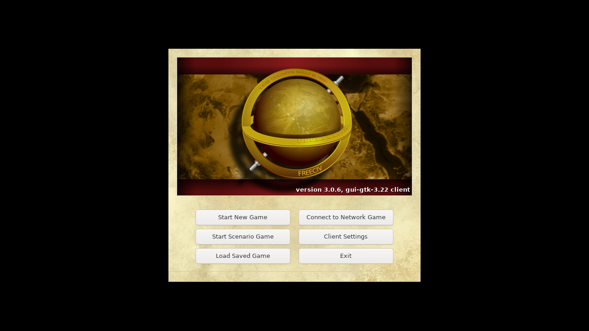

What the game is
Lead a tribe from early history through science, cities, diplomacy, exploration, military pressure, wonders, and victory scoring.
A free open-source empire-building strategy game inspired by classic Civilization: explore, settle cities, research technology, trade, wage war, and compete through long turn-based campaigns.
Choose Freeciv when you want a deeper Civilization-style strategy game that can run as a local server. It is a good next step after Unciv because there is a native client/server pair and a mature ruleset ecosystem.
Lead a tribe from early history through science, cities, diplomacy, exploration, military pressure, wonders, and victory scoring.
Debian Freeciv server and GTK client are installed on GannanNet. Server TCP smoke and VM GUI launch smoke both passed.
Player-ready Windows/Linux installers, Android options, and a real multi-client join/play smoke are still pending.
One official screenshot and one actual GannanNet client-launch screenshot are cached locally.


This hub has real launch evidence, but it is not yet a polished one-click player pack. The next practical goal is a saved local server profile and a join test from a real laptop.
Freeciv has a tutorial scenario in the native client. It is the fastest way to learn cities, units, research, and turns.
Use settlers to claim good terrain. Cities produce units, buildings, research, and long-term score.
Technology unlocks governments, units, buildings, and late-game victory paths.
LAN games work best with agreed turn timers and a smaller map until players understand the rules.
These are the current local commands and upstream references.
Server smoke: scripts/native_service_smoke.sh freeciv-lan
Server binary: /usr/games/freeciv-server
Client binary: /usr/games/freeciv-gtk3.22
Default local port tested: 5556/tcp
This tells players whether the entry is ready to play or only ready to research.
Freeciv accepted a local TCP connection and was stopped cleanly.
GTK client stayed alive under Xvfb and produced a nonblank screenshot.
Connect one real desktop client to the local server and start a tutorial/small map.